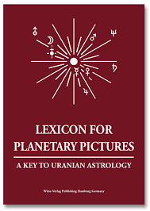

★Pakornpat Khamton
"สวัสดีจ้า! เราชื่อเจ้านายนะ จะเรียกว่าเจ้าเฉย ๆ ก็ได้ ตอนนี้เรากำลังเรียนวิศวกรรมคอมพิวเตอร์อยู่ สนุกมาก ๆ เลยหล่ะ แต่พอให้คนอื่นลองทายคณะที่เราเรียน กลับไม่มีใครทายว่าเราเรียนวิศวะเลย🌚"

★ติวเตอร์-Turtoring
เรามีประสบการการสอนเด็ก ๆ มาแล้ว 2 ปี ส่วนมองจะสอนเด็กม.ปลาย เด็กสุดที่เคยสอนคือน้อง ป.2 เป็นประสบการที่สนุกมาก ๆ 🤩 อยากติววิชาไหนทักได้เลยครับ!★ภาพพิมพ์ลายหินอ่อน-Paper Marbling
ภาพพิมพ์แขนงนี้เป็นหนึ่งในงานศิลปะที่แสดงถึงตัวเราได้ค่อนข้างดีเลย เพราะว่ามันมีรูปแบบที่หลากหลาย แปลก สามารถสร้างลวดลายและคู่สีใหม่ได้ไม่รู้จบ บางทีละอองสีที่หยดลงบนผิวน้ำกลับไม่หยดบนลงตำแหน่งที่ต้องการด้วย ดื้อสุด ๆ

★โหราศาสตร์ยูเรเนียน-Uranian Astrology
ตั้งแต่ปี 2024 เราเริ่มสนใจโหราศาสตร์แขนวหนึ่งที่เรียกว่า "ยูเรเนียน" โหราศาสตร์นี้จะเอาตำแหน่งของดวงดาว ณ เวลาที่เราเกิด เอาตำแหน่งดาวมาบวกลบคูณหารกัน เกิดเป็นสมการดาวทำนายชะตาได้ด้วยล่ะ!